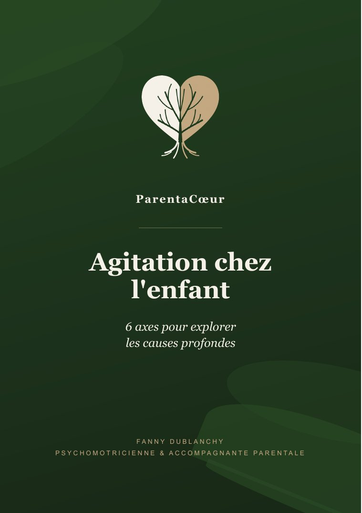

Ebook · Fanny Dublanchy, psychomotricienne
Agitation chez l'enfant
6 axes pour explorer les causes profondes
Pourquoi mon enfant est-il agité ? Pourquoi a-t-il des émotions si intenses ? Comment l'aider ? Cet ebook rassemble les pistes que j'explore avec les parents, pour regarder ce qui se joue derrière le comportement.
17 € · PDF de 32 pages · bientôt disponible
Être prévenu(e) de la sortiePour qui ?
Pour les parents qui sentent qu'il y a quelque chose à comprendre derrière l'agitation de leur enfant.
- « Mon enfant a des crises émotionnelles intenses, je ne sais plus quoi faire. »
- « Tout se passe bien à la maison, mais à l'école, ça ne va plus. »
- « Je ne parviens pas à l'aider dans ses apprentissages, je me sens démuni. »
Et pour les professionnels de l'enfance intéressés par ces sujets.
Un enfant sain, qui va bien, est naturellement source de bruit, d'agitation, de joie, d'émotions parfois intenses. L'objectif n'est pas de le rendre plus sage ou plus docile. Il s'agit de soutenir son bien-être, sa détente et ses fonctions exécutives.
Ce que vous y trouverez
Six axes, et un bonus. Pour chacun, ce qui peut se jouer, les signes à observer, et les professionnels vers qui se tourner.
- 1Le sommeil et la respirationLa qualité du sommeil, la bouche ouverte la nuit, les ronflements, et ce qui favorise un sommeil apaisé.
- 2L'alimentation et la digestionLe petit-déjeuner, la glycémie, la constipation, et des repères simples pour le quotidien.
- 3La santé psychiqueLes besoins non comblés, les charges émotionnelles, et ce qui nourrit la sécurité intérieure.
- 4Corps et santé physiqueLes tensions corporelles, les réflexes archaïques, le mouvement, la nature, les écrans, le jeu libre.
- 5Le système nerveuxLa maturation du cerveau de l'enfant, et la co-régulation : comment votre état intérieur l'aide à s'apaiser.
- 6Les aspects éducatifs, l'environnement scolaireLa collectivité, le cadre, et comment repérer qu'un malaise s'installe.
- ✦Bonus : le non visibleL'habitat, les empreintes périnatales, le transgénérationnel. Pour ceux à qui ça parle.
Ce que cet ebook est
- Un point de départ, pour comprendre ce qui peut se jouer derrière l'agitation.
- Des pistes concrètes, à piocher selon ce qui vous parle.
- Une approche globale, inspirée de la psychomotricité et de ma pratique auprès des familles.
Ce qu'il n'est pas
- Une méthode rigide, ou culpabilisante.
- Un diagnostic, ni un traitement médical.
- Un remplacement du suivi par votre médecin ou les professionnels de santé.

L'autrice
Fanny Dublanchy
Je suis psychomotricienne diplômée d'État et accompagnante parentale. J'ai exercé en libéral, principalement auprès d'enfants aux profils variés : troubles neurodéveloppementaux, TDAH, troubles psycho-émotionnels ou du comportement.
Un point commun revient très souvent : des fonctions exécutives fragiles. Portée par une grande curiosité, je me suis formée et passionnée pour les causes profondes, et j'ai développé une approche qui prend en compte les bases de la santé de l'enfant.
Cet ebook condense ce que je souhaite transmettre aux parents.
Questions pratiques
- Sous quelle forme est l'ebook ?
- Un fichier PDF de 32 pages, au format A5, confortable à lire sur téléphone, tablette ou ordinateur. Vous pouvez aussi l'imprimer.
- Comment je le reçois ?
- Juste après le paiement, un lien de téléchargement s'affichera, et vous recevrez un reçu par email. L'ebook sera disponible très bientôt : laissez votre email pour être prévenu(e) de sa sortie.
- Le paiement est-il sécurisé ?
- Oui, il passera par Stripe, un service de paiement en ligne sécurisé. Je n'aurai jamais accès à vos coordonnées bancaires.
- J'ai une question avant d'acheter.
- Écrivez-moi à contact@parentacoeur.fr, je vous réponds avec plaisir.
- Et si j'ai besoin de plus qu'un ebook ?
- Pour regarder ensemble la situation de votre enfant, je propose aussi des consultations individuelles en visio.
Agitation chez l'enfant
6 axes pour explorer les causes profondes
17 € · bientôt disponible
Être prévenu(e) de la sortiePrenez ce qui vous parle, et avancez à votre rythme.